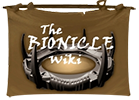
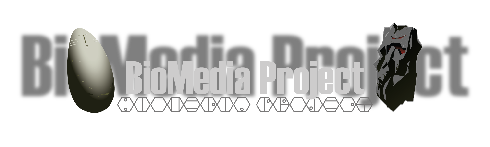

Helpful links
To get in touch with the community, here are some helpful links to places where the BIONICLE fandom can still be found.
_________________
BS01 Wiki
As they say on their home page: the most accurate and comprehensive BIONICLE related Wiki page on the Internet.
_________________
Bionicle Wiki
A slightly less reliable source of information for a knowledge thirsty Chronicler, tread with caution in this one.

_________________
BZPower
One of the largest unofficial BIONICLE websites by far, containing various forums discussing BIONICLE related topics.
_________________
BioMedia Project
A non-profit project dedicated to preserving all of BIONICLE media (such as online games, comics, serials etc.) for the older and newer generations.

_________________
The BIONICLE Animations Archive
A channel which brings classic BIONICLE animations to YouTube in high quality. Also includes the original trilogy, fully remastered and upscaled to 1080p HD.
Various other creators
SuddenlyOranges
Creator of the comedy series Reviving BIONICLE (RB) which centers around BIONICLE characters coping with the cancellation of the legendary LEGO line.
Check out his:
Tumblr
RB Tumblr
YouTube Channel
RB Merchandise
_________________
The TTV Channel
The Three Virtues: A LEGO entertainment group which delivers BIONICLE and LEGO related content such as set reviews, current news and podcasts.
Check out their:
YouTube Channel
Website
_________________
Christian Faber
One of the original creators of BIONICLE. Developed the idea of the tropical island setting (the island of Mata Nui) and contributed to numerous artistics aspects of the BIONICELE universe.
Check out his:
YouTube Channel
Blog